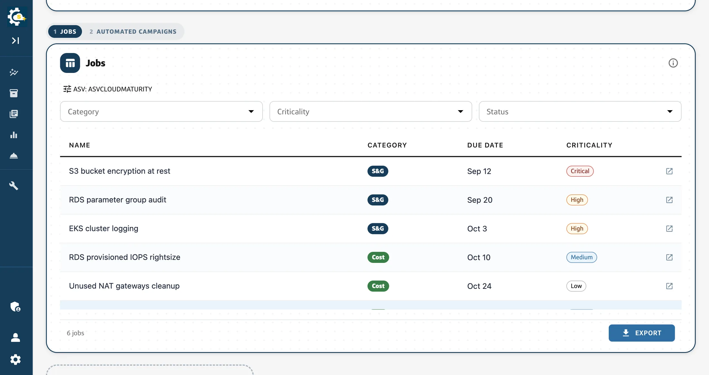

Capital One
Persona Homepage
A homepage serving several kinds of user, each of whom needs a different half of it. I am designing and building the customisation model: what a page opens as when it knows who is looking, what it lets you move, and where the line is between a layout somebody owns and a layout nobody can support. In progress, shipping behind a flag this quarter.
One homepage, several jobs
The people arriving at this page do not want the same things. Some own one application and want the shortest path to what it needs today. Some run a division and want the shape of all of it. Today they get the same page, tuned for the first group, so everyone else lands and immediately starts filtering.
The obvious answer is to let people customise it. The obvious answer is also how you end up with a page most users never touch and a small minority configure into something nobody can support.

Two personas, not five
The proposal I inherited had five roles, and the version before that had three. The first workshop collapsed them to two, and the reasoning is the part worth keeping: the first release ships widgets that already exist on the current dashboards, and five roles cannot be told apart by widgets none of them have yet. A five-way split is a promise the product cannot cash.
So there are two. Somebody scoped to one application or account, and somebody scoped to many, a division, or all of them. The finer split is written down and waiting for the role-specific widgets that would make it mean something.
The persona is also not read off a job title. It is inferred from a scope the user has confirmed: on a first visit the page shows what it detected about them and asks them to correct it before anything is saved. Applying it silently was on the table and the workshop turned it down, which I think was right. A page that quietly rearranges itself around a guess about you is a page you cannot argue with.
Scope is the persona
Every widget declares which scope dimensions it can answer for. Effective scope resolves widget-first, then the page, then a default from the profile, so one widget can be pinned to a single application while the rest of the page follows the division.
The interesting case is the mismatch: the page is scoped by something a widget does not accept. Two easy answers were available and both are wrong. Applying it silently makes the widget lie about what it is showing; dropping it silently makes it lie about what it was asked. So it ignores the dimension and says so on its own chip. A visible inconsistency the reader can reason about beats an invisible one they cannot.

A catalog you cannot get wrong
The widget catalog is a typed array in code, one file per widget, and it validates itself at module load: duplicate identifiers and malformed scope declarations throw before anything renders. A JSON file and a server-fetched catalog were both considered and both rejected, because both turn a compile error into a runtime one and then need a fallback for the case where the catalog is missing, and a fallback catalog is a second source of truth pretending to be a safety net.
Layouts are personal and named. Customise anything and the page creates one for you rather than silently mutating the preset, so the preset stays available to go back to. The larger version of this feature, with sharing and cloning and a roles model, needs a backend and a permissions story that phase one does not have, and saying so out loud was cheaper than discovering it in the build.

Shipping it where nobody can see it
The new homepage is a separate route behind a flag that is off in production, and the existing homepage is untouched, byte for byte. That is deliberate: this arrives as roughly forty small pull requests over a quarter, and the cost of a regression on the page everybody already uses is far higher than the cost of running two routes for three months.
If the flag resolves off, or the client that evaluates it fails outright, the new route redirects to the old one. The failure mode of a half-finished homepage should be the homepage that already works, and that has to be designed rather than hoped for.
The defaults are the product
The thing I keep coming back to is that customisation is not the feature. The default is the feature, and customisation is what you offer the people the default cannot serve. If the starting layout is right for most people, very few will change it, and that is the success case rather than a sign the feature failed.
So most of the work has been research, personas and defaults, not settings screens. Which layout does the page open as, and how does it decide? What moves, and what is fixed because moving it would break the orientation of everyone who has learned where it is? Two rounds of structured feedback are built into the plan for exactly that, because the answer is not something I can reason my way to alone.
Write-up to follow once it ships.